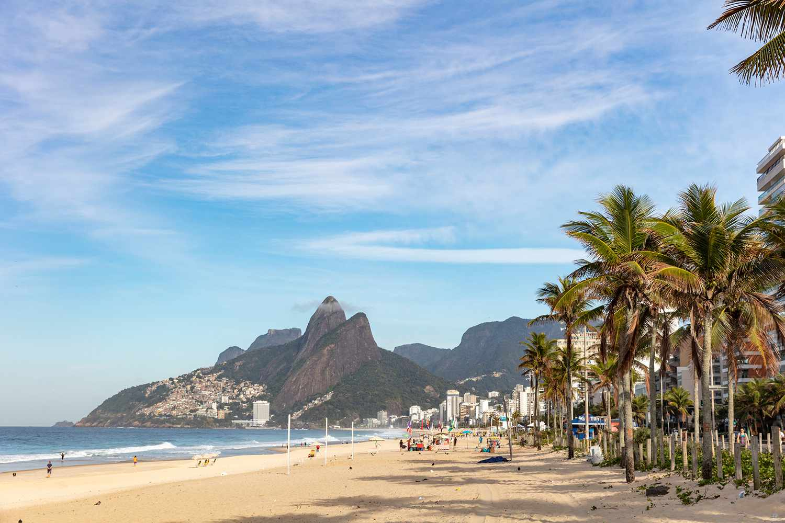
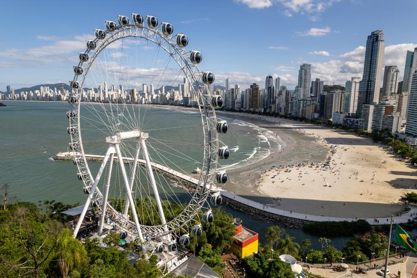
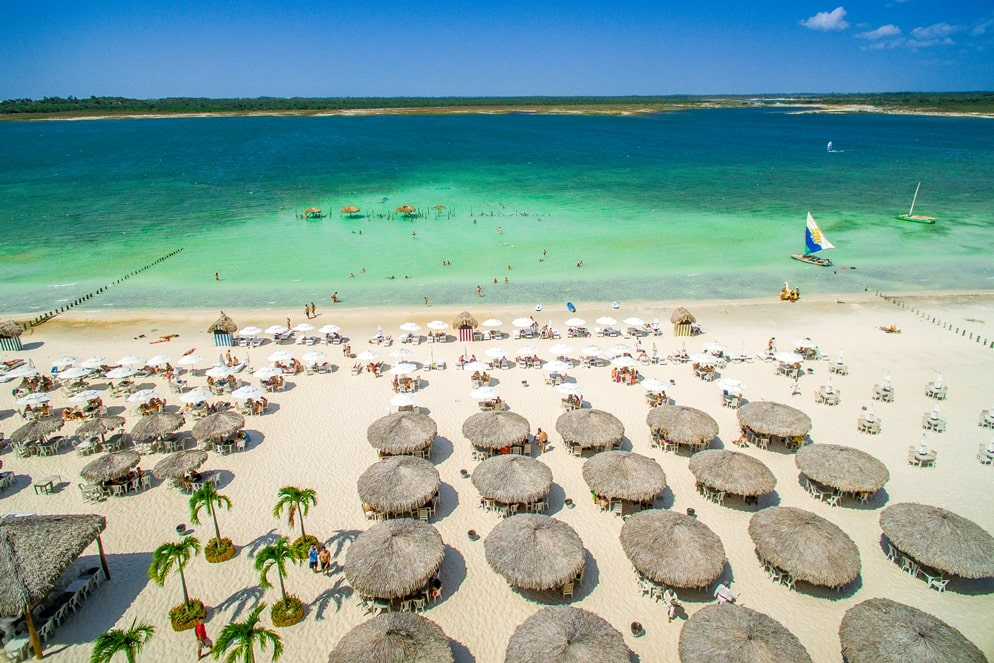

Pacote de viagem para o Rio de Janeiro

Dia 1: Chegada e Copacabana
Chegada ao Rio e check-in em Copacabana.
Passeio pela praia e jantar em quiosque.
Dia 2: Cristo Redentor e Santa Teresa
Visita ao Cristo Redentor.
Exploração do bairro de Santa Teresa, com almoço local e visita ao Parque das Ruínas.
Dia 3: Pão de Açúcar e Lapa
Manhã no Pão de Açúcar, seguido de almoço na Urca.
Tarde nos Arcos da Lapa e Escadaria Selarón, aproveitando a vida noturna à noite.
Dia 4: Jardim Botânico e Ipanema
Visita ao Jardim Botânico e dia relaxante na praia de Ipanema.
Jantar com vista para o mar.
Dia 5: Despedida
Últimas compras e check-out para o aeroporto.
Aproveite a beleza do Rio!
Pacote de viagem para São Paulo

Dia 1: Chegada e Avenida Paulista
Chegada ao Aeroporto de Guarulhos e check-in no hotel.
Passeio pela Avenida Paulista, visitando o MASP e o Parque Trianon.
Jantar em um restaurante na região, explorando a diversidade gastronômica.
Dia 2: Centro Histórico e Liberdade
Visita ao Centro Histórico, incluindo a Catedral da Sé e o Pátio do Colégio.
Almoço no bairro da Liberdade, famoso pela cultura japonesa.
Tarde no Mercado Municipal, experimentando o famoso sanduíche de mortadela.
Dia 3: Vila Madalena e Ibirapuera
Manhã na Vila Madalena, admirando os grafites e visitando o Beco do Batman.
Almoço em um dos cafés da região.
Tarde no Parque Ibirapuera, com visita ao Museu de Arte Moderna.
Dia 4: Bairros e Cultura
Visita ao bairro de Pinheiros e suas feiras de artesanato.
Almoço em um restaurante local.
À noite, assista a um espetáculo no Theatro Municipal ou em um dos muitos teatros da cidade.
Dia 5: Despedida
Últimas compras e check-out para o aeroporto.
Aproveite a beleza de São Paulo!
Pacote de viagem para Minas Gerais

Dia 1: Chegada a Belo Horizonte
Chegada ao Aeroporto de Confins e check-in no hotel.
Passeio pela Praça da Liberdade e visita ao Mercado Central.
Jantar com pratos típicos, como pão de queijo e feijão tropeiro.
Dia 2: Ouro Preto
Compreende a Ouro Preto, explorando suas lojas barrocas e ruas de pedra.
Almoço em um restaurante local.
Visita ao Museu da Inconfidência e ao Parque do Itacolomi.
Dia 3: Mariana e Congonhas
Visite a Mariana, a primeira cidade de Minas, e sua catedral.
Almoço em
Retorno a Belo Horizonte para um jantar em um restaurante mineiro.
Dia 4: Inhotim
Dia dedicado ao Instituto Inhotim, um dos maiores museus no céu aberto do mundo.
Almoço no local, desfrutando da arte e natureza.
Retorno a Belo Horizonte para um passeio noturno.
Dia 5: Despedida
Café da manhã e últimas compras de artesanato.
Check-out e traslado para o aeroporto.
Pacote de viagem para Santa Catarina

Dia 1: Chegada a Florianópolis
Chegada ao Aeroporto Internacional de Florianópolis e check-in no hotel.
Passeio pela Lagoa da Conceição e jantar em um restaurante com vista.
Dia 2: Praias do Norte
Visita às praias do norte, como Jurerê e Canasvieiras.
Almoço à beira-mar e relaxamento na praia.
À noite, explore a vida noturna de Jurerê.
Dia 3: Centro Histórico e Ilha do Campeche
Passeio pelo centro histórico de Florianópolis, incluindo a Praça XV e a Catedral.
Almoço em um restaurante local.
Tarde na Ilha do Campeche, famosa por suas águas cristalinas.
Dia 4: Serra do Rio do Rastro
Compreendemos a Serra do Rio do Rastro, apreciando as vistas deslumbrantes.
Almoço em um restaurante da serra.
Retorno a Florianópolis para um jantar típico.
Dia 5: Despedida
Café da manhã e últimas compras de
Check-out e traslado para o aeroporto.
Pacote de viagem para o Ceará

Dia 1: Chegada a Fortaleza
Chegada ao Aeroporto Pinto Martins e check-in no hotel.
Passeio pela Praia de Iracema e jantar em um restaurante à beira-mar.
Dia 2: Canoa Quebrada
especial a Canoa Quebrada, famosa por suas falésias e praias.
Almoço em um restaurante local e relaxamento na praia.
À noite, aproveite a vida noturna da região.
Dia 3: Jericoacoara
Viagem a Jericoacoara, com paradas em lagoas ao longo do caminho.
Almoço em Jericoacoara e visita à Pedra Furada.
Pôr do Sol na Duna do Pôr do Sol.
Dia 4: Lagoa do Paraíso
Dia na Lagoa do Paraíso, aproveitando as redes e águas cristalinas.
Almoço em um dos restaurantes flutuantes.
Dia 5: Despedida
Retorno à Fortaleza, aproveite a beleza do Ceará!